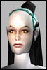

| Author | Thread |
Tradition
Eleet
 | Fixer and PvP... Plz nerf Fixers... don t let them grid during a PvP fight plz.....
Thx
C.I.A |
Patrica Johnson
Leet
 | So what? Fixers can't kill anyone, so why should they be killable? it's balance. cannot kill, cannot be killed. stop whining for nerfs. thats patchetic and destroys the game. fixers are ment to be able to get out of tricky situations. accept it or quitr. |
loca
Phear Leet | heh poor trader... |
Tradition
Eleet
| [QUOTE]Originally posted by Patrica Johnson
[B]So what? Fixers can't kill anyone, so why should they be killable[QUOTE]
Ok.... why they want PvP??? to escape??? lol
C.I.A |
Patrica Johnson
Leet
| quote:
Originally posted by Tradition
Ok.... why they want PvP??? to escape??? lol
C.I.A
Basicly, yes. |
mulps1
Phear Leet
 | heheh how to win friends and influence people eh tradition...
don't ask for nerfs..as what goes around comes around. |
Tradition
Eleet
| LOL .... so i have no friends in game ... all always ask to nerfs traders 
and just dont let them GRID during fight...
C.I.A |
mulps1
Phear Leet
| make my GA undebuffable and i will happily stay around to fight..
if you want free kills go gank lvl 75's |
Tradition
Eleet
| LOL LOL LOL
If u enjoy killing 70's it s ur probleme (favorite high lvl omni hunt)
I only take pleasure killing High level Omni s and a lot more when they have a tittle 
C.I.A |
Coldstrike
Supa Leet
 | The whole point of that nano line is to grid out of a fight. If it can't be used during a fight they might as well delete it.
The only thing I would like to see done to fixers is a little tweaking of the DMS numbers on GA. But then again, new 100% AR weapons are out, so that might not be needed any more. |
stromm
Supa Leet
 | When you kill someone, they are sent to the reclaim and they get their stuff, the person who did the most damage recieves a title point.
When a fixer grids out, they are sent in the grid with 1/1 hp/nano and are out of the pvp zone they escaped from. No one gains points.
People complain about gridding...
Title lust anyone? 
Even so, the same people who will send tells to someone who gridded out that theyre a ***** and theyre cheap are *usually* the ones who will send clanners or omnis they kill immature tells 'congratulating' them on their death. So the finger is pointed toward the type of people who ask for the disability to grid out, and yet they still accept this service when grouped with a fixer.
Even then people can still zone, and /quit which is becoming more and more popular...
When someone /quits, they are petitioned and emailed only to get the sender no response, and the /quitter returns in the pvp zone in the exact same spot they left in, with 1/1 hp and nano. They do not lose points.  |
Wahoo.
Supa Leet
 |  LOL.. to silly LOL.. to sillyI had a fixer grid on me 4 times last night .
I really dont blame them at all. If i was a fixer i would grid to instead of joining reclaim.You know what . I'd rather them grid so they can come back to fight. I really don't care bout titles , what i do like is.. the hunt. That is why i like 2h0.
I hate the omni NPC's and guards, those need to go.
It needs to be made an icc outpost that way omni's wont run to guards but it is still fun. |
stromm
Supa Leet
| quote:
Originally posted by Patrica Johnson
So what? Fixers can't kill anyone, so why should they be killable? it's balance. cannot kill, cannot be killed. stop whining for nerfs. thats patchetic and destroys the game. fixers are ment to be able to get out of tricky situations. accept it or quitr.
Very strange, because i've been both killed and i've killed people... |
Wahoo.
Supa Leet
| LOL quote:
Originally posted by Patrica Johnson
So what? Fixers can't kill anyone, so why should they be killable? it's balance. cannot kill, cannot be killed. stop whining for nerfs. thats patchetic and destroys the game. fixers are ment to be able to get out of tricky situations. accept it or quitr.
Fixers can kill and be killed .
Have you gave a beer to a fixer today , if not you should! |
loca
Phear Leet | quote:
Originally posted by Flak "Stromm" Tempest
Very strange, ........and i've killed people...
and u r not in jail? |
Wahoo.
Supa Leet
|  lol lolquote:
Originally posted by loca
and u r not in jail?
Well, the cops can't catch him but , more than likey he is rooted in the grid hopefully dotted!
Doh , dots break root! NM
Joke!! |
Teufeldieb
Phear Leet
 | Re: LOL.. to silly quote:
Originally posted by LittleTotem
I had a fixer grid on me 4 times last night .
I really dont blame them at all. If i was a fixer i would grid to instead of joining reclaim.You know what . I'd rather them grid so they can come back to fight. I really don't care bout titles , what i do like is.. the hunt. That is why i like 2h0.
I hate the omni NPC's and guards, those need to go.
It needs to be made an icc outpost that way omni's wont run to guards but it is still fun.
LT that was fun last night out there against you and Shaded. And that is the side of PvP that I like. Out in 2h0 with groups of peeps duking it out. The arena is alright if you like that kinda stuff. I am not to worried about a title. The reason I kept gridding out last night was cause I had just hopped out of a mission and didnt want to loose the millions of xp I had. But I saved in NL and went back. Usually I stay till I die but I just didnt want to loose the xp.
Anyways had fun last night just thought I would say that. |
Streaz18
Supa Leet
 | You can't die in the grid, even with a DOT on. |
All times are GMT.


 Last Thread Next Thread
Last Thread Next Thread 
 October 7th, 2002 09:53
October 7th, 2002 09:53